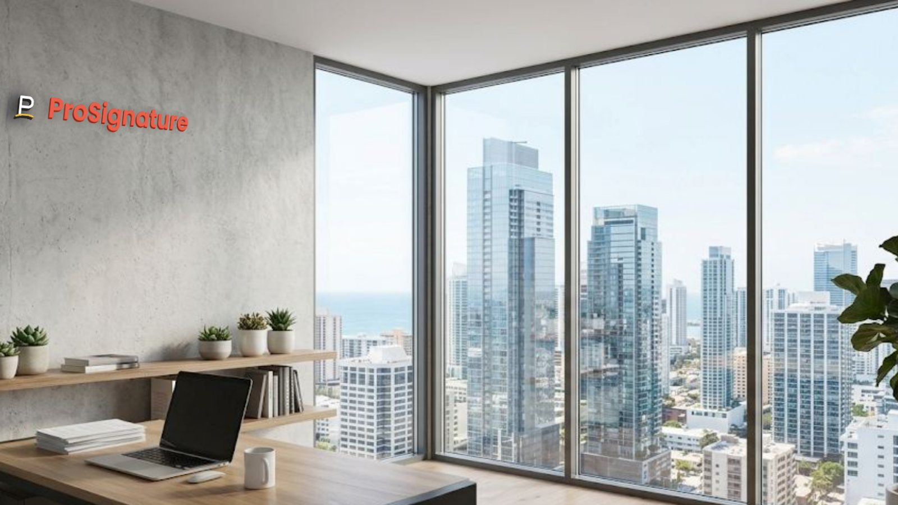
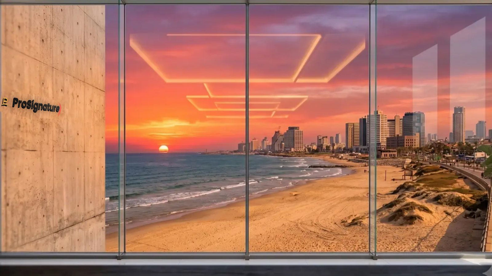
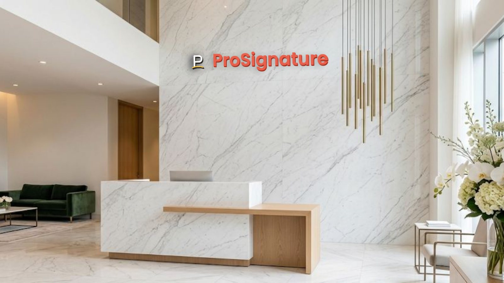
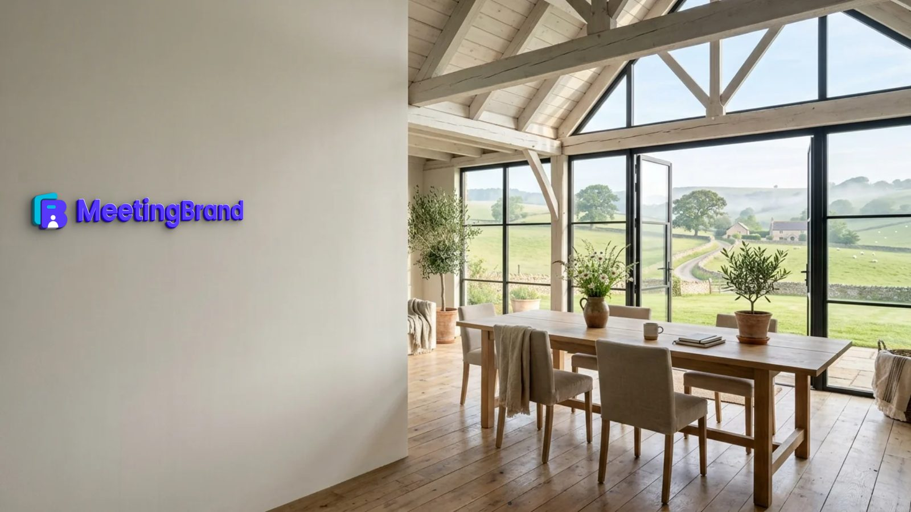
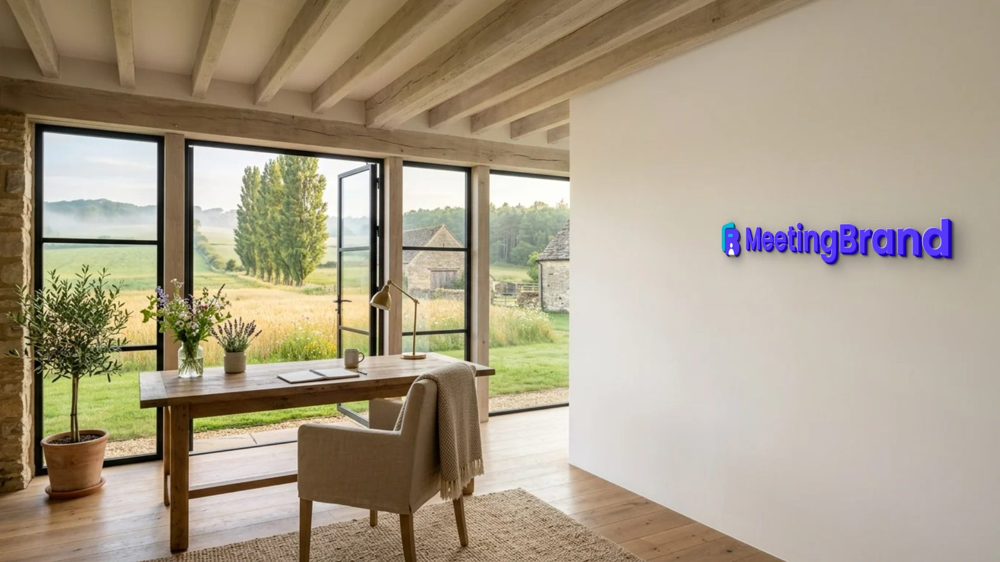

Branded virtual backgrounds at company scale
Every meeting.
On brand.
MeetingBrand creates realistic virtual backgrounds from your company website and delivers the approved ones to your team: Microsoft Teams via the MeetingBrand Agent, Google Meet via the MeetingBrand Chrome extension; Zoom and directory sync are coming.
Free during early access. No design work. No off-brand calls.
What is MeetingBrand?
MeetingBrand is a web application that creates branded virtual backgrounds for video meetings from a company's website. An admin signs up with a work email; MeetingBrand fetches the company's public logo and brand colors from that domain, mounts the logo as a physical sign in any of 22 built-in office rooms, adds an optional name bar with each employee's name and title, and exports every background as a 1920×1080 image that works in Microsoft Teams, Google Meet, Zoom and any other meeting app that accepts custom backgrounds. Delivery is built in for Microsoft Teams through the MeetingBrand Agent and for Google Meet through the MeetingBrand Chrome extension (today from the admin's own browser, and for every employee after the extension's Chrome Web Store listing); Zoom delivery and directory sync are coming. MeetingBrand is free during early access and is made by the team behind CompanyCard (company-card.com) and ProSignature (prosignature.co).
| Category | Branded virtual background software for video meetings (Microsoft Teams, Google Meet, Zoom). |
|---|---|
| Input | Your company website. Sign up with a work email and MeetingBrand fetches the public logo and brand colors from that domain; you can also upload a logo. |
| Rooms | 22 built-in office rooms: City open space, Walnut executive wall, Tel Aviv sunset window, Stone & slats lounge, Tel Aviv beach window, Concrete gallery night, Manhattan skyline window, Forest window, Concrete corner loft, Brick creative loft, Navy executive study, Marble reception, Glass office corridor, Travertine lounge, Concrete open office, Oak skyline office, Charcoal wall oak office, Arched-window loft lounge, Sunset tower office, Alpine lake executive office, Farmhouse meadow studio, Stone farmhouse study. |
| Sign treatments | 14: Wall sign, Wall sticker, Silver letters, Brass letters, Oak letters, Washed wood, Black letters, Illuminated, Glass signage, Metal plaque, Backlit plate, 3D acrylic, LED signage, Wallpaper. |
| Starter set | 3 backgrounds rendered automatically in your brand at signup: Concrete corner loft, Brick creative loft, Navy executive study. |
| Name bar | Optional, per employee: name, title, department and company, on the downloaded background. The backgrounds the Agent and the extension deliver are the company look without a personal name bar. |
| Output | 1920×1080 PNG download per background, for any meeting app that accepts custom backgrounds. |
| Microsoft Teams | Live. The MeetingBrand Agent for Windows and macOS places the company's background in each person's Teams background gallery; IT installs it once with the Intune or Jamf script generated in the app, and people added by CSV are matched by e-mail. The employee picks the background once and Teams keeps it. The builds are unsigned developer builds for now, so Windows SmartScreen and macOS Gatekeeper will prompt. Directory sync from Microsoft 365 is coming. |
| Google Meet | Live from the admin's browser. The MeetingBrand Chrome extension applies the branded background to the camera in Google Meet; today it is connected from the admin's own browser, because enrollment uses the admin's key. For every employee it follows the Chrome Web Store listing, which is not published yet: then an admin force-installs it for managed Chrome from the Google Admin console. Until then the extension is a developer package in the app. |
| Zoom | Coming. The Zoom integration — uploading the background into each employee's own Zoom background library — is built and awaits approval of its Zoom App Marketplace app. Today each person downloads the 1920×1080 PNG and sets it once in Zoom. |
| People | Add people by CSV (name, email, title, department) from My team → Upload users. Directory sync from Microsoft 365 (Entra ID), Google Workspace and Zoom is coming. |
| Share pages | Any background can be published as a public page at meetingbrand.com/b/?s=<slug> — “<Company> — official meeting background” — with a preview, the date and an embed badge for the company website. The full-resolution file stays inside the workspace. |
| Price | Free during early access. |
| Data | Application data is stored with Supabase in Frankfurt (EU) with row-level access controls; this website is hosted on GitHub Pages. MeetingBrand never reads meeting audio, video, chat or calendars. |
| Company | Made by the team behind CompanyCard (company-card.com, digital business cards) and ProSignature (prosignature.co, email signatures). Support: support@meetingbrand.com. |
| Verified | October 10, 2026, against product build v96 at meetingbrand.com/app/. |
Facts verified October 10, 2026 against product build v96. Written and maintained by the MeetingBrand team; this block changes only when a fact changes.
Paste your domain. Get your brand.
MeetingBrand identifies your logo, colors and visual style, then turns them into a ready-to-use background collection — with a personal name bar for every employee.
Real backgrounds, not branded wallpaper.
Your logo belongs in the space. It should not float over it. MeetingBrand creates natural-looking environments — brass, backlit letters, LED, oak, concrete — that feel credible on camera.
Roll out once. Stay consistent everywhere.
Approve the company look in one place. Where the MeetingBrand Agent (Teams) or the Chrome extension (Meet) is installed, a new approved background reaches people without sending files or setup instructions — and every background also downloads as a 1920×1080 file for any meeting app.





How it works
From domain to rollout in minutes.
Connect your brand
Type your domain. MeetingBrand pulls the logo and colors and mounts your sign on real office scenes — brushed metal, brass, oak, backlit, LED and more.
Pick the looks
Choose the scenes and sign treatments for the company. Add a name bar with each person's name and title.
Add your people
Upload a CSV with name, email, title and department — no employee has to sign up for anything. Directory sync from Microsoft 365, Google Workspace and Zoom is coming.
Deliver it
Teams: IT installs the MeetingBrand Agent once (Intune or Jamf); each person picks it once. Meet: the Chrome extension applies it — from the admin's browser today, for everyone after its store listing. Zoom: coming; download the file meanwhile.
What "delivered" means on each platform
No meeting platform lets a third party switch a person's active background by API — so we tell you exactly what happens where.
Microsoft Teams
Today: the MeetingBrand Agent, installed once by IT through Intune or Jamf, places the background in the Teams gallery on Windows and Mac; each person picks it once and Teams keeps it. Coming: directory sync from Microsoft 365. Teams Premium tenants can also upload the image in the Teams admin center and require it.
Status, October 10, 2026: Live. The MeetingBrand Agent for Windows and macOS places the company's background in each person's Teams background gallery; IT installs it once with the Intune or Jamf script generated in the app, and people added by CSV are matched by e-mail. The employee picks the background once and Teams keeps it. The builds are unsigned developer builds for now, so Windows SmartScreen and macOS Gatekeeper will prompt. Directory sync from Microsoft 365 is coming.
Google Meet
Today: the MeetingBrand Chrome extension applies the background to the camera automatically, in the admin's own browser. Coming: force-install for every managed Chrome from the Google Admin console once the extension is listed on the Chrome Web Store, and directory sync from Google Workspace.
Status, October 10, 2026: Live from the admin's browser. The MeetingBrand Chrome extension applies the branded background to the camera in Google Meet; today it is connected from the admin's own browser, because enrollment uses the admin's key. For every employee it follows the Chrome Web Store listing, which is not published yet: then an admin force-installs it for managed Chrome from the Google Admin console. Until then the extension is a developer package in the app.
Zoom
Today: each person downloads the 1920×1080 file and sets it once in Zoom. Coming: MeetingBrand uploads it straight into each employee's own Zoom background library; they pick it once and it stays.
Status, October 10, 2026: Coming. The Zoom integration — uploading the background into each employee's own Zoom background library — is built and awaits approval of its Zoom App Marketplace app. Today each person downloads the 1920×1080 PNG and sets it once in Zoom.
Any other meeting app
Every background downloads as a 1920×1080 PNG, with the optional name bar, and works in any meeting app that accepts a custom background image.
Built for every customer-facing team.
Give Sales, Support, Recruiting, Leadership and distributed teams a consistent presence in every call. Marketing sets the look, IT installs the MeetingBrand Agent once, and every new hire can be on brand from their first call.
Small business or self-employed? MeetingBrand for small businesses: the price for a 5-person team, the setup steps and the answers to the usual questions.
Your data stays yours.
We use the names, emails, titles and departments you add to personalise backgrounds, and nothing else. Ask us and we delete your workspace. Details in the privacy policy.
Frequently asked questions
What is MeetingBrand?
MeetingBrand is a web application that creates branded virtual backgrounds for video meetings from a company's website. An admin signs up with a work email; MeetingBrand fetches the company's public logo and brand colors from that domain, mounts the logo as a physical sign in any of 22 built-in office rooms, adds an optional name bar with each employee's name and title, and exports every background as a 1920×1080 image that works in Microsoft Teams, Google Meet, Zoom and any other meeting app that accepts custom backgrounds. Delivery is built in for Microsoft Teams through the MeetingBrand Agent and for Google Meet through the MeetingBrand Chrome extension (today from the admin's own browser, and for every employee after the extension's Chrome Web Store listing); Zoom delivery and directory sync are coming. MeetingBrand is free during early access and is made by the team behind CompanyCard (company-card.com) and ProSignature (prosignature.co).
Is MeetingBrand free?
Yes. MeetingBrand is free during early access.
Which meeting platforms does MeetingBrand deliver to?
Today: Microsoft Teams, through the MeetingBrand Agent (installed by Intune or Jamf), and Google Meet, through the MeetingBrand Chrome extension (today from the admin's own browser, and for every employee after the extension's Chrome Web Store listing). Zoom is coming: the integration is built and awaits approval of its Zoom App Marketplace app. Directory sync is coming; people are added by CSV today. Every background can also be downloaded as a 1920×1080 PNG and used in any meeting app that accepts custom backgrounds.
How does MeetingBrand create a background from a website?
You sign up with a work email. MeetingBrand fetches your company's public logo and brand colors from that domain, renders 3 starter backgrounds in your brand automatically, and lets you pick from 22 built-in rooms and 14 sign treatments — brass, oak, backlit, LED, glass and more — with your logo mounted as a physical sign in the scene. Every background exports as a 1920×1080 image.
Can an employee's background be applied automatically, without the employee doing anything?
Only on Google Meet, where the MeetingBrand Chrome extension applies the branded background to the camera automatically (today from the admin's own browser, and for every employee after the extension's Chrome Web Store listing). On Microsoft Teams the MeetingBrand Agent places the image in the person's background gallery and they pick it once; Teams keeps it. No meeting platform lets a third party switch a person's active background by API, so MeetingBrand does not claim to.
What is a MeetingBrand share page?
A public page at meetingbrand.com/b/?s=<slug> that shows a company's approved meeting background — “<Company> — official meeting background” — with a preview, the date and an embed badge for the company website. An admin turns it on per background from the Live preview in the app; the full-resolution file stays inside the workspace.
Where is MeetingBrand data stored?
With Supabase in Frankfurt (EU), protected by row-level access controls; this website is hosted on GitHub Pages. MeetingBrand reads names, emails, titles and departments to personalize backgrounds and never reads meeting audio, video, chat or calendars.
Facts verified October 10, 2026 against product build v96. Written and maintained by the MeetingBrand team; this block changes only when a fact changes.
Update once. Refresh everywhere.
Try the brand-set builder now — free during early access — or write to us and we will set your company up personally.
We reply personally within two business days. No newsletter, no spam.